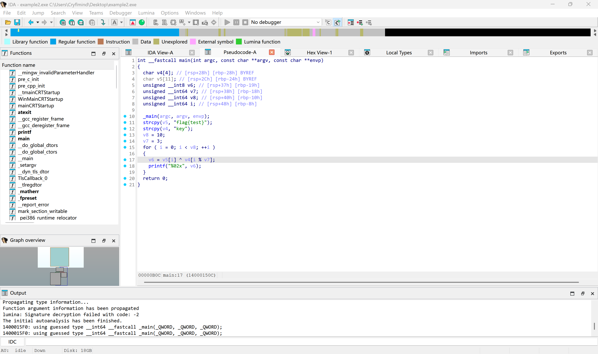
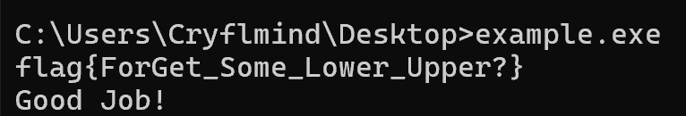

基本运算¶
对于初学者来说，“基本运算”这个词可能听起来较为抽象，似乎意味着需要学习很多新的内容。
但实际并不复杂，本文仅介绍逆向中常见的基础运算方法。
XOR 异或加密¶
前置知识：什么是异或XOR？¶
异或（XOR）是一种 逻辑运算，在数字电路和逻辑代数中广泛使用。
在计算机中，它通常以 按位运算（bitwise operation） 的形式出现，即对两个二进制数的每一位分别进行异或计算。
其真值表如下：
| A | B | A⊕B |
|---|---|---|
| 0 | 0 | 0 |
| 0 | 1 | 1 |
| 1 | 0 | 1 |
| 1 | 1 | 0 |
有两个常见的真值表记忆口诀
- 相同为0，不同为1。
- 不带进位的二进制加法。（即“模2加法”）
这种运算与二进制表示天然契合，因此在计算机体系中被直接实现为 xor 指令。
xor指令的格式是xor dest, src。
其中dest是目标操作数，src则是来源操作数，操作数可以是寄存器、内存单元或立即数。
寄存器（Register）
直接操作 CPU 寄存器中的值，速度最快。
内存单元（Memory）
用方括号 [] 表示，访问对应地址处的内存内容。
立即数（Immediate）
直接嵌入指令中的常数值，不涉及任何内存或寄存器访问。
但在 x86 架构中，两操作数指令通常有一个限制：
- 最多只能有一个操作数是内存操作数
- 目标操作数不能是立即数
另外，汇编中的 xor eax, eax 通常用于将对应寄存器清零。
原理¶
介绍完异或运算后，下面说明异或加密。
异或加密在逆向题中非常常见，因为它实现简单、特征明显，适合用于基础混淆。
他的特性是 对称 ，核心原理是因为异或运算存在如下性质：
A 在经过两次相同的异或运算后，会还原成 A 本身。
怎么证明这个性质？
这里猫猫给出一种比较直观的证明思路（严格证明可以从布尔代数性质推出）：
首先我们先明确一个基本事实：异或运算每一位的结果都是 独立 产生的，这意味着每一位的异或结果并不会影响到其他位。
来回忆一下异或运算(XOR,⊕)的真值表，对于两个1位二进制 A 和 B ：
| A | B | A⊕B |
|---|---|---|
| 0 | 0 | 0 |
| 0 | 1 | 1 |
| 1 | 0 | 1 |
| 1 | 1 | 0 |
显然异或运算具有交换律，其结合律其实也很易得(或许这里读者可以自证一下？)
那么 A XOR B XOR B 显然等价于A XOR (B XOR B) ，也就是A XOR 0 。
而任何数和0进行异或，得到的结果就是这个数本身。
所以对于1位二进制数，我们有A XOR B XOR B = A，但因为每一位的运算都是相互独立的，所以这个结论可以自然推广到多位二进制数。
如果读者想要尝试一下的话，可以自己利用数学知识来严谨证明一下哦~
猫猫の碎碎念
需要注意的是，单纯的 XOR 加密在真正的密码学中几乎没有安全性（除非使用一次性密钥 One-Time Pad）。
因此在 CTF 中它更多只是作为一种简单的混淆手段。
加密¶
以下使用一个简单的 C 程序进行演示：
#include <stdio.h>
#include <string.h>
int main() {
const unsigned char flag[] = "flag{test}";
const unsigned char key[] = "key";
size_t flen = strlen(flag);
size_t klen = strlen(key);
for (size_t i = 0; i < flen; i++) {
unsigned char c = flag[i] ^ key[i % klen];
printf("%02x", c);
}
}
首先将其编译为汇编并进行简化整理：
; int __fastcall main(int argc, const char **argv, const char **envp)
main proc near
; "flag{tes"的ASCII编码（小端序），因为x86是小端序存储，
; 所以低字节0x66（即'f'）存于低地址，对应字符串的首字节
mov rax, 7365747B67616C66h
mov qword ptr [rbp+var_24], rax
mov word ptr [rbp+var_24+8], 7D74h
mov [rbp+var_24+0Ah], 0
mov dword ptr [rbp+var_28], 79656Bh ; "key\0"
mov [rbp+var_8], 0 ; i = 0
mov [rbp+var_18], 3
.loop:
cmp [rbp+var_8], 10
jge .done
lea rax, [rbp+var_24]
add rax, [rbp+var_8]
movzx ecx, byte ptr [rax] ; ecx = flag[i]
mov rax, [rbp+var_8]
mov rdx, 0
div [rbp+var_18] ; rdx = i % 3
movzx eax, [rbp+rdx+var_28] ; eax = key[i % 3]
xor eax, ecx ; flag[i] ^ key[i%3]
mov [rbp+var_19], al
movzx edx, [rbp+var_19]
lea rcx, Format ; "%02x"
call printf
add [rbp+var_8], 1 ; i++
jmp .loop
.done:
mov eax, 0
retn
main endp
异或加密顾名思义，就是利用 xor 指令对我们感兴趣的内容进行加密，从而在一定程度上起到 简单混淆（obfuscation） 的效果。
而这一段汇编代码中的 xor eax, ecx 对应 C 代码中的 flag[i] ^ key[i % klen]。
如果一开始无法确定 xor 进行了怎样的操作，可以借助 IDA 的反编译视图辅助分析。
在 IDA 中按 F5 可查看伪代码：

int __fastcall main(int argc, const char **argv, const char **envp)
{
char v4[4]; // [rsp+28h] [rbp-28h] BYREF
char v5[11]; // [rsp+2Ch] [rbp-24h] BYREF
unsigned __int8 v6; // [rsp+37h] [rbp-19h]
unsigned __int64 v7; // [rsp+38h] [rbp-18h]
unsigned __int64 v8; // [rsp+40h] [rbp-10h]
unsigned __int64 i; // [rsp+48h] [rbp-8h]
_main(argc, argv, envp);
strcpy(v5, "flag{test}");
strcpy(v4, "key");
v8 = 10;
v7 = 3;
for ( i = 0; i < v8; ++i )
{
v6 = v5[i] ^ v4[i % v7];
printf("%02x", v6);
}
return 0;
}
可以看到IDA的反汇编已经成功识别出了v6 = v5[i] ^ v4[i % v7]。
解密¶
接下来说明解密过程。由于 XOR 运算具有对称性，解密逻辑与加密逻辑一致：
由异或性质
可知，用同样的 key B 对密文 C 再次进行 XOR 运算，即可将密文 C 还原为明文 A。
以下是一个使用 Python 3 实现的解密程序示例：
cipher = bytes.fromhex("0d09180c1e0d0e160d16") # 填入密文并转为bytes
key = b"key" # 填入反编译得来的key
plain = b""
for i in range(len(cipher)): # 这里需要跟加密的逻辑一致
plain += bytes([cipher[i] ^ key[i % len(key)]])
print(f"{plain.decode()}")
运行结果：
解密成功。
在逆向题目中不一定看到的就是明文喵~
可能有人会问了，我前面都已经看到明文就是flag{test}了，为什么还要费劲去写一个解密程序？
事实上，绝大多数的逆向题目里面存的都不是明文，而是加密后的密文，程序会要求我们输入正确的flag，在加密之后和程序存储的密文进行比较。
我们需要做的就是根据程序对输入内容的加密，来逆向编写出解密程序，从而实现对加密后flag的还原。
int8 计算¶
接下来讨论与 int8 密切相关的 char 类型。
标题写的是 int8，这里为什么要讨论 char？
事实上，在计算机系统中，即使是 char 这样的字符，本质上也是以数字形式存储的。
我们在前面的 C 语言基础篇中已经介绍了 ASCII 码，也提到过键盘上的可见字符基本都可以用一个 ASCII 码表示。
实际实现也是如此，因此下面这段代码是合法的：
正如注释所示，这个字符串最终会从 abc 变成 bdb，这也是防止直接搜索 flag 的常见方法之一。
话说char到底是不是一个有符号数……？
事实上，C/C++标准里特意把这种问题设定为一种"实现定义行为"（implementation-defined behavior），也就是说，char 是否有符号取决于你的编译器和平台。
在大多数 x86/x64 平台上（如 MSVC、GCC/Linux），char 默认等价于 signed char；而在某些 ARM 平台上，char 默认等价于 unsigned char。
需要注意的是，尽管 char、signed char、unsigned char 是三种不同的类型，但 char 在运行时必然是其中某一种——要么有符号，要么无符号，并不存在第三种状态。
如果你的代码依赖 char 的符号性，建议显式使用 signed char 或 unsigned char 以避免平台差异带来的问题。
例题¶
下面看一道例题（其中 buffer 为全局字符数组）：
int __fastcall main(int argc, const char **argv, const char **envp)
{
_DWORD v4[32]; // [rsp+20h] [rbp-B0h] BYREF
char Str[32]; // [rsp+A0h] [rbp-30h] BYREF
size_t v6; // [rsp+C0h] [rbp-10h]
size_t i; // [rsp+C8h] [rbp-8h]
//Mingw会有一个 mainCRTStartup -> main，IDA会解析成_main
//做题时不用管这个
_main(argc, argv, envp);
strcpy(Str, "flag{FOREST_so_enhance_Breath}");
memset(v4, 0, 24);
v4[6] = -32; //注意这里从index 6开始，因为v4前6项其实都是0
v4[7] = -32;
v4[8] = -2;
v4[9] = -18;
v4[10] = -32;
v4[11] = 0;
v4[12] = 32;
v4[13] = 0;
v4[14] = -14;
v4[15] = 0;
v4[16] = 15;
v4[17] = 28;
v4[18] = -14;
v4[19] = -9;
v4[20] = -2;
v4[21] = -13;
v4[22] = 0;
v4[23] = -19;
v4[24] = 2;
v4[25] = -11;
v4[26] = -4;
v4[27] = 2;
v4[28] = 41;
v4[29] = 0;
scanf("%99s", buffer);
v6 = strlen(Str);
for ( i = 0; i < v6; ++i )
buffer[i] += LOBYTE(v4[i]);
if ( !strcmp(buffer, Str) )
printf("Good Job!");
else
printf("Try again!");
return 0;
}
从表面上看，出题人似乎把 flag 直接写在了程序中：flag{FOREST_so_enhance_Breath}。
但如果直接提交该字符串，则会看到 Wrong Flag 的提示。
这是一个错误的 flag，原因如下。
注意这一行：buffer[i] += LOBYTE(v4[i])，其中 buffer 是程序读取的输入字符串。
这说明程序并没有直接将输入字符串与目标字符串比较，而是先对多个字符进行偏移，而 v4 实际上存储了各个位置字符对应的偏移量。
解法¶
那么该如何解题呢？
这是逆向工程题目的一个常见解题思路：按照程序逻辑逆向计算，反推出目标字符串对应的原始 flag。
输入字符串通过偏移后与目标字符串比较，只需逆转这个操作：将 加法 改为 减法，就能将目标字符串还原回flag。
据此可写出如下 Python 程序：
offset = [0,0,0,0,0,0,-32,-32,-2,-18,-32,0,32,0,-14,0,15,28,-14,-9,-2,-13,0,-19,2,-11,-4,2,41,0]
origin = "flag{FOREST_so_enhance_Breath}"
flag = ""
for i in range(30):
flag += chr(ord(origin[i])-offset[i])
print(flag)
然后就可以得到最终 flag：flag{ForGet_Some_Lower_Upper?}。
验证结果如下：

可以看到程序输出了 Good Job，至此该题完成。
其他常见方法¶
此外还可以继续扩展到几个大类：移位密码、置换密码、替换密码等。
以替换密码为例，它与前面的 int8 计算在形式上有一定相似性，但核心是“替换策略”，即根据一个或多个替换表，按规则对原文进行替换，例如凯撒密码和维吉尼亚密码。
如果对这类算法感兴趣，可以继续阅读 Crypto 方向的内容。
这里不再展开。
PS：如果希望快速记忆，可以代入“披着羊皮的狼”；但仍建议优先掌握原理与细节。